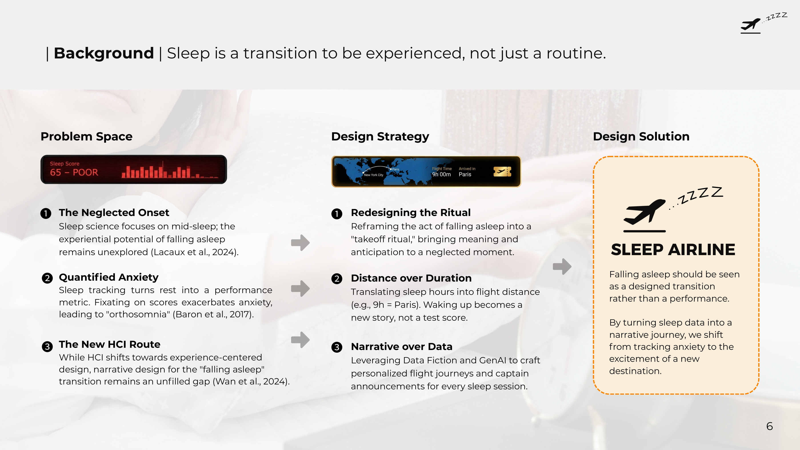
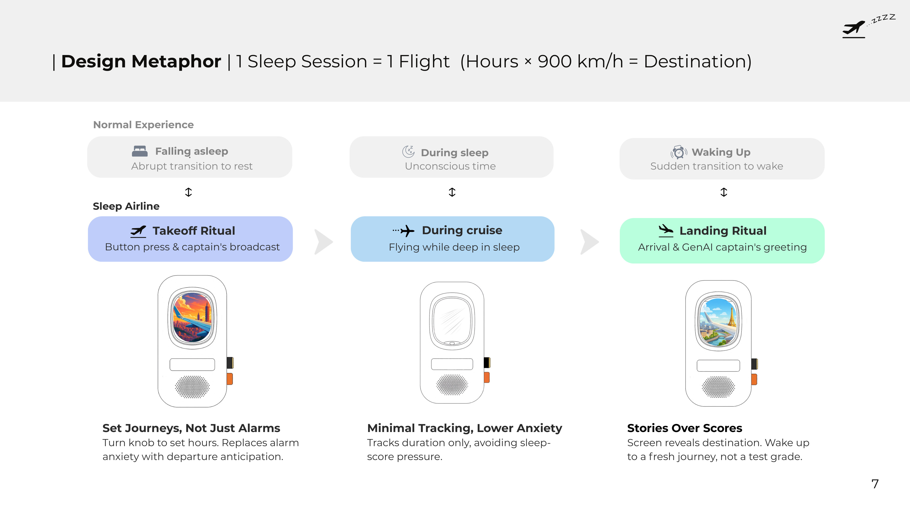
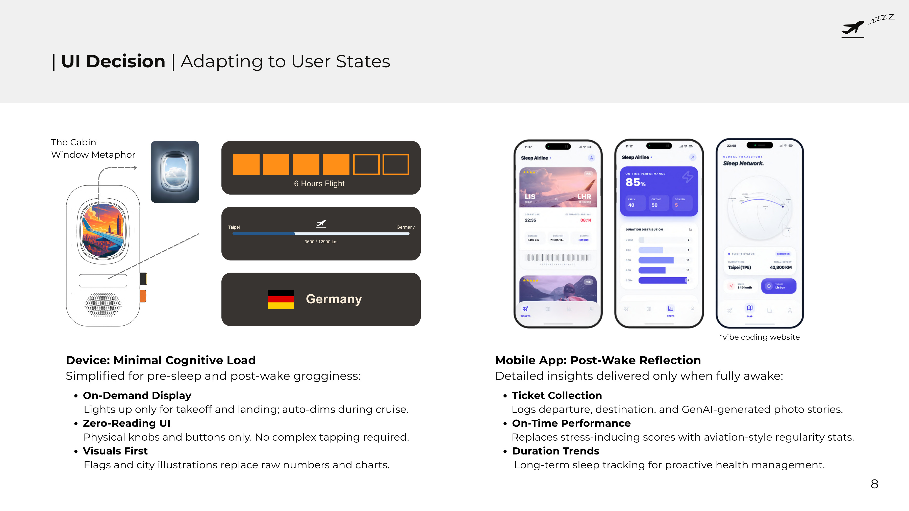
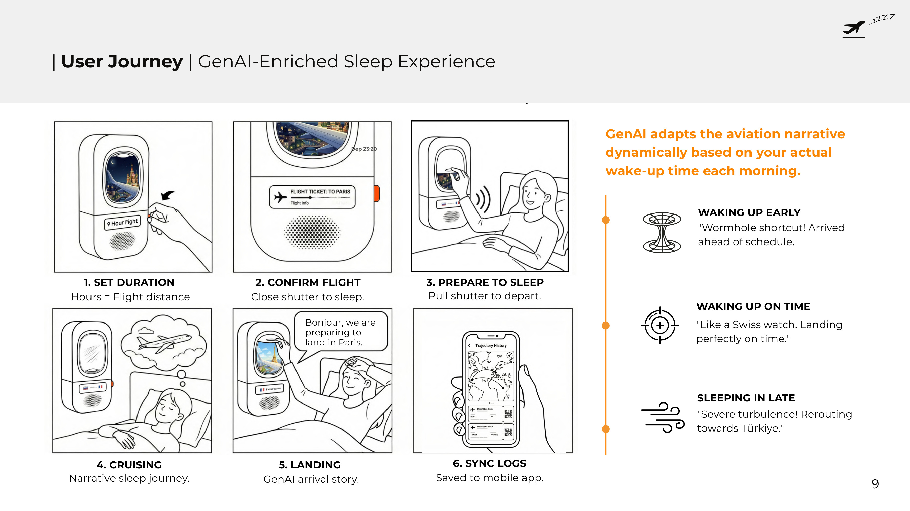
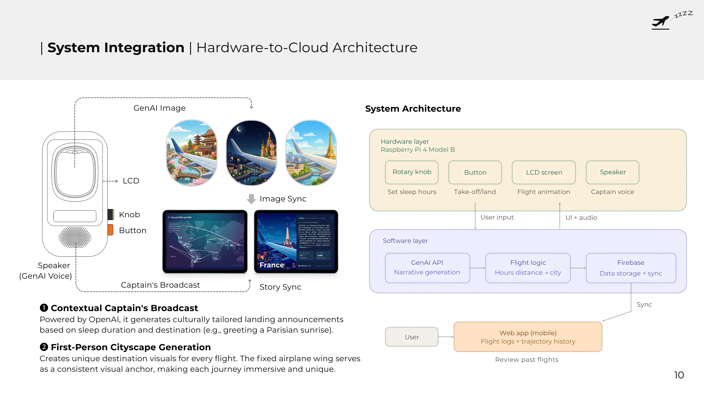
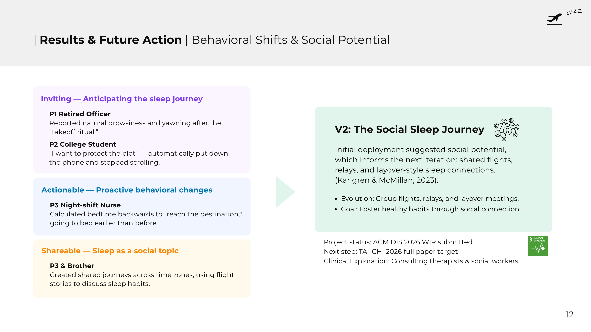

← All work

01 — Sleep Airline
Sleep, reimagined as a flight.
A bedside device that turns falling asleep into a “takeoff ritual” — GenAI captain's voice, illustrated cityscapes, and stories instead of sleep scores.
A bedside device that turns falling asleep into a “takeoff ritual” — GenAI captain's voice, illustrated cityscapes, and stories instead of sleep scores.

Sleep trackers turn rest into a score. Fixating on those numbers can backfire into “orthosomnia” — anxiety caused by the pursuit of perfect sleep data (Baron et al., 2017).
At the same time, sleep science focuses on mid-sleep, leaving the moment of falling asleep — the onset — largely undesigned. As HCI shifts toward experience-centered design, narrative design for this transition is still an open gap.

Set your hours with a knob and the device plots a route: hours × 900 km/h = a destination. Nine hours lands you in Paris.
The two moments around sleep are cognitively fragile, so the interface splits in two:


Pull the shutter to depart; close it to sleep. Each morning, GenAI adapts the arrival narrative to when you actually woke up:
Using AI-assisted development (Cursor), I built a deployable, high-fidelity prototype end to end:


A 7-day in-home deployment with 3 users (the device as their primary alarm), with insights triangulated from daily LINE logs, interviews and review sessions:
That social signal now drives V2: co-flying — shared flights, relays and layover-style sleep connections.